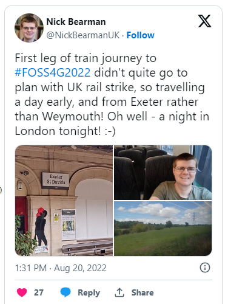
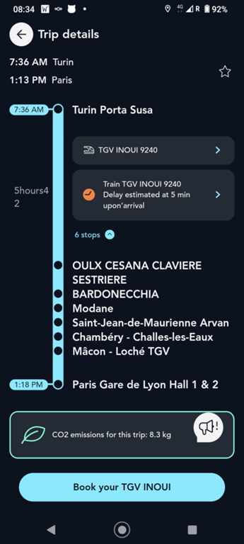

FOSS4G: Travelling by Train to Florence, Italy (from Weymouth, UK)
I recently attended my first international FOSS4G conference in Florence (Firenze), Italy, in August 2022. For those who don’t know, FOSS4G is Free and Open Source for (4) Geospatial, so all of the people involved in open source geospatial software (e.g. QGIS, R-Spatial, Geoserver, Mapserver, GRASS, etc. etc.) get together. It is a great opportunity to meet up with the community, get to know people who you might only have met online, and find out about the latest developments. There are some great write-ups online about the conference – check them out.
I decided to travel from the UK by train to Florence, and this post is about that journey – in both senses of booking it, and travelling it. I wanted to do this a) to see if it was possible and how easy it was, and b) to reduce my carbon footprint by getting the train rather than flying. I’ve also got some photos of my trip on Twitter.
The first place to spend a bit of time is seat61.com – this is a great website run by Mark Smith who does all sorts of train travel across the world. My trip to Florence is bit a tame compared to some of the trips on there, but it was a great resource. Seat61 directed me to Rail Europe, where I booked all of my trains beyond Paris. Working out the timings was a little complex, but with the help of suggested routes, I got something worked out.

My planned outbound itinerary was:
Weymouth – London – Paris – Geneva
night in Geneva
Geneva – Milan – Florence
Return:
Florence – Turin
night in Turin
Turin – Paris – London – Weymouth
I booked these about ~2 months beforehand (in June), and the cost breakdown was:
Weymouth to London (SWR, return): £70
London to Paris (Eurostar, return): £219
Rail Europe (out):
Paris to Geneva (SNCF, single): €129 ~£112.91
(night in Geneva CHF90, ~£80.90)
Geneva – Milan (Trenitalia): €60 ~£52.52
Milan – Florence (Trenitalia): €39.90 ~£34.92
Return:
Florence – Turin: €50 ~£44.50
Turin – Paris (TGV): €99 ~£86.65
Paris – London (included in return above)
London – Weymouth (included in return above)
Because of the currency changes, I paid £341.95 to Rail Europe, so a total of £630.95 for my train travel.
One alternative I didn’t manage to find was sleeper trains. Night jet has recently gained in popularity since I booked this, so there might be some alternative routes there.
There is now an overnight option to Venice, but this wasn’t an option when I started looking, and Venice is a bit out of the way to get to Florence.
My planned itinerary got slightly mangled because of the rail strikes in the UK, so I ended up having to travel from Exeter to London (rather than Weymouth) and have a extra night stay in London – but I managed to catch the ‘Back to the Future’ musical, so the extra night had some compensations.
Beyond that, everything went as planned and I arrived in Florence on time, at 1400 on Monday.
The SCNF Connect app – the equivalent of the National Rail app for France & Italy. One thing to remember – when travelling on Eurostar, the queue at St Pancras was very very long, but they were very efficient so even though there were many people there, I had plenty of time for my train – I arrived and got through the queue, check-in, security and both sets of border control (leaving UK and entering France) in 45 min.

I’d also recommend the SCNF Connect app – a great app which will give you train details with updates and platforms.
Check out the Twitter thread for some photos of the various different trains I was on.
It was a great trip, and I really enjoyed it. It certainly took longer and cost more, but for me, it was worthwhile. Let me know about your train adventures!